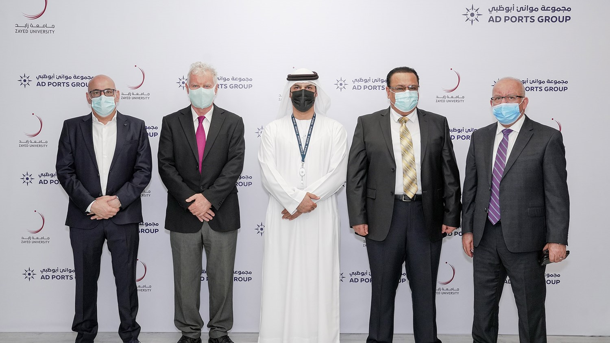
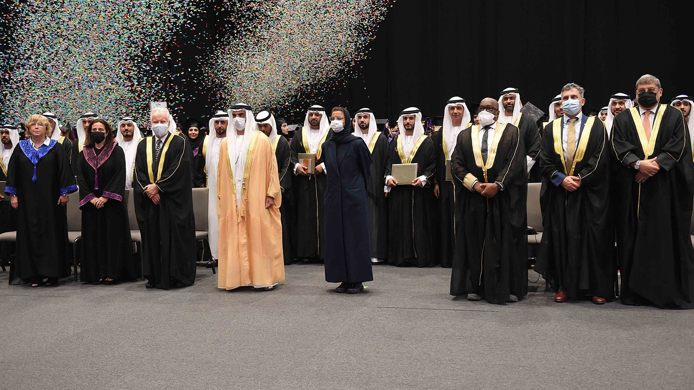
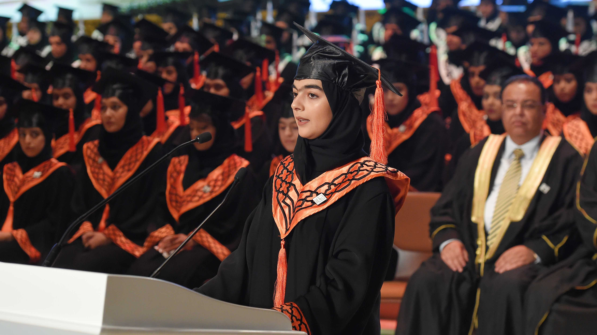

Zayed University and AD Ports Group ink MoU for Development of
Maritime Sustainability Solutions and Education

Hamed Bin Zayed Attends the Graduation of Zayed University Masters
Graduates & Honors Graduates and Undergraduates

Zayed University to Celebrate Class of 'Future Makers' Graduation
Ceremony March 14th to 16th at Expo 2020

Zayed University is a national and regional leader in educational
innovation. Founded in 1998 and proudly bearing the name of the Founder
of the Nation – the late Sheikh Zayed bin Sultan Al Nahyan, this
flagship institution has met the President’s high expectations. Today,
Zayed University has two modern campuses in Dubai and Abu Dhabi that
welcome both national and international students.
Vision
Vision Globally recognized as the leading university in the region for
excellence in educational innovation, research, and student leadership
development that serves the changing needs of the nation in economic,
social and cultural advancements
Mission
Proudly bearing the name of the nation’s founding President, Zayed
University is a federal institution that prepares bilingual graduates to
contribute to and advance all aspects of society. Our mission is carried
out from two major campuses in Abu Dhabi and Dubai. The University
offers diverse and internationally recognized undergraduate and graduate
programs that provide engaging and inclusive student experiences. Our
graduates are prepared to contribute to and promote the social and
economic wellbeing of UAE society and the professions. Through research,
scholarship, creative activities, outreach and continuing education
services, the University provides educational leadership, expands
opportunity, and disseminates knowledge to local, regional, and global
communities.